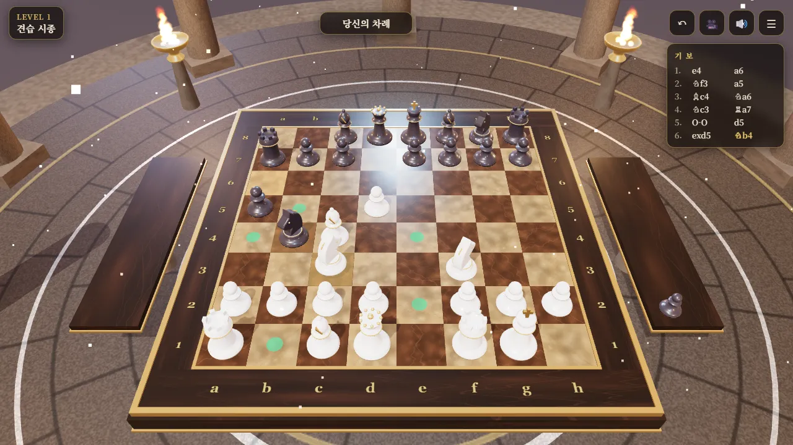
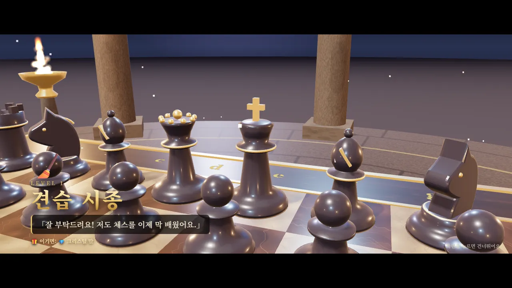
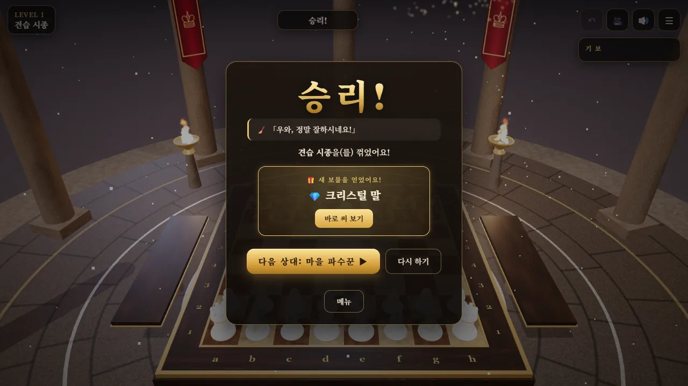

🧩 퍼즐 게임 · 무료 · 설치 없음
왕좌의 체스
“달빛 신전의 3D 체스판, 열 명의 도전자”
- 한 판 10~30분
- 컴퓨터 상대 10단계
- 돌려 볼 수 있는 3D 체스판
- 열린 단계 자동 저장
회원가입 없이 누르면 바로 시작돼요
어떤 게임인가요?
달빛이 비치는 둥근 신전 한가운데, 대리석 칸과 금테를 두른 체스판이 놓여 있어요. 돌기둥 사이로 붉은 깃발이 걸리고 네 모서리의 금빛 화로가 일렁이며 상아색 말과 흑요석색 말을 비춰요.
말을 누르면 살짝 떠오르고, 갈 수 있는 칸에 초록 불이 켜져요. 말은 칸 위로 날아가 내려앉고, 나이트는 다른 말을 뛰어넘어요. 잡힌 말은 빙글 돌며 판 옆 받침대로 날아가요.
상대는 컴퓨터예요. 실수가 많은 「견습 시종」부터 깊이 계산하는 「체스 황제」까지 열 명이 기다리고, 한 명을 꺾을 때마다 다음 상대가 열려요. 단계가 오를수록 신전의 빛 색이 바뀌며 긴장감이 높아져요.
이렇게 해요
- STEP 1
상대와 진영을 골라요
열린 단계에서 상대를 고르고, 백(먼저 둠)·흑·무작위 중 하나를 골라 「대국 시작」을 눌러요.
- STEP 2
말을 누르고 칸을 눌러요
내 말을 누르면 갈 수 있는 칸이 초록으로 빛나요. 그 칸을 누르면 말이 움직이고, 컴퓨터가 생각한 뒤 다음 수를 둬요.
- STEP 3
체크메이트로 이겨요
상대 킹이 피할 곳 없이 잡히게 만들면 승리! 다음 단계 상대가 열려요.


⚙️ 이런 것도 있어요
- 화면을 끌면 체스판이 돌아가고, 두 손가락(마우스는 휠)으로 확대·축소해요
- 🎥 버튼으로 앉은 시점과 위에서 내려다보는 시점을 바꿔요
- ↶ 무르기로 내 수를 물릴 수 있어요 (컴퓨터 수와 함께)
- 캐슬링·앙파상·승급까지 체스 규칙을 모두 지원하고, 무승부도 판정해요
- 컴퓨터 화면에서는 오른쪽에 기보가 기록돼요
1~6단계 상대는 일부러 실수를 섞어서 체스를 막 배운 사람도 이길 수 있어요.
이런 분께 추천해요
- 체스 규칙을 막 배워 실제로 두어 보고 싶은 분
- 멋진 3D 체스판에서 한 판 두고 싶은 분
- 한 단계씩 더 강한 상대에게 도전해 보고 싶은 분
처음이라면 1단계에서 백으로 시작해 보세요. 잘못 뒀다면 ↶ 무르기로 되돌리고 다른 수를 찾아보면 돼요.
📱 어떤 기기에서 하면 좋을까요?
- 가장 좋아요컴퓨터·노트북 크롬·엣지·웨일
3D 체스판이 크고 부드럽게 보이고, 오른쪽에 기보도 함께 나와요. 마우스를 올리면 고를 수 있는 칸이 표시돼요.
- 가장 좋아요태블릿 가로 화면
손가락으로 말을 누르고 판을 돌려 볼 수 있어요. 큰 화면이라 3D 무대가 잘 보여요.
- 괜찮아요휴대폰 가로·세로 모두
둘 수는 있지만 칸이 작아요. 세로 화면에서는 판을 위에서 내려다보는 시점이 돼요. 오래된 휴대폰은 3D가 느릴 수 있어요.
오른쪽 위 메뉴(⋮ 또는 ···)에서 「다른 브라우저로 열기」를 눌러 크롬이나 사파리로 열어 주세요. 앱 안에서는 전체 화면이 안 되고 저장이 풀릴 수 있어요.
🍎 아이폰·아이패드에서는
- ① 사파리로 열기
카카오톡이나 네이버 앱 안에서는 화면이 좁고 3D가 느릴 수 있어요. 「다른 브라우저로 열기」나 사파리로 열어 주세요.
- ② 화면을 넓게 쓰기
아이폰은 전체 화면 버튼이 없어요. 주소창 왼쪽의 가가(aA) 버튼 → 「도구 막대 가리기」를 누르면 체스판을 더 크게 볼 수 있어요.
- ③ 소리
무음 스위치가 켜져 있으면 말 놓는 소리가 나지 않아요. 소리 없이도 둘 수 있고, 화면의 🔊 버튼으로 켜고 끌 수 있어요.
🤖 갤럭시 등 안드로이드에서는
크롬이나 삼성 인터넷으로 열면 바로 둘 수 있어요. 3D 그래픽을 인터넷에서 불러오므로 와이파이나 데이터가 연결되어 있어야 해요.
▶ 바로 해 보기
설치도, 회원가입도 필요 없어요.
왕좌의 체스 시작하기game.edoori.co.kr/chess3d/